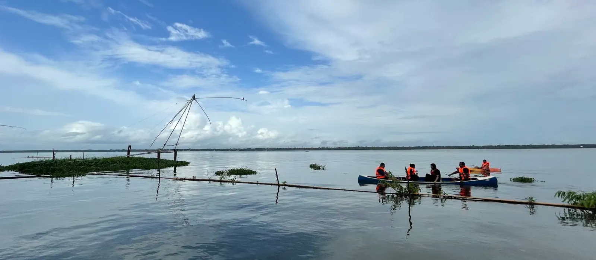

Vembanad Lake Holiday Guide: Best Backwater Experiences, Kumarakom & Vaikom
When people think of Kerala, one of the first images that comes to mind is a traditional houseboat moving slowly through peaceful backwaters surrounded by coconut trees.
At the heart of Kerala's backwater landscape is Vembanad Lake, one of the state's most beautiful destinations for a relaxing holiday.
Whether you are travelling with family, friends or your partner, a Vembanad Lake holiday offers the perfect combination of nature, relaxation and authentic Kerala experiences.
Why Visit Vembanad Lake?
Vembanad Lake is surrounded by beautiful villages, coconut palms, waterways and traditional Kerala landscapes.
Unlike a holiday focused entirely on sightseeing, a backwater trip gives you the opportunity to slow down.
You can spend your morning exploring the area, enjoy a traditional meal at lunchtime and return to your resort in the evening to watch the sunset.
Best Backwater Experiences in Kerala
A holiday around Vembanad Lake can include several memorable experiences.
Enjoy a Scenic Boat Ride
Boating is one of the best ways to experience Kerala's backwaters. The peaceful water, green surroundings and village landscapes create a relaxing experience for travellers of all ages.
Explore Local Villages
The areas around Vembanad provide opportunities to experience a quieter side of Kerala, away from busy cities and commercial tourist attractions.
Enjoy Kerala Cuisine
No Kerala holiday is complete without trying traditional local food. A relaxed meal featuring authentic Kerala flavours can be one of the highlights of a backwater stay.
Watch the Sunset
A sunset beside the lake is a simple but memorable experience. Find a quiet spot, slow down and enjoy the changing colours over the water.
Vembanad Lake vs Kumarakom: Which Should You Choose?
Vembanad Lake is a large backwater destination, while Kumarakom is one of the best-known tourist areas located along its shores.
If you want a classic Kerala backwater holiday with established tourism infrastructure, Kumarakom is an excellent option.
If you prefer a quieter and more private experience, consider staying at a peaceful resort or private villa in another part of the Vembanad region.
Why Visit Vaikom?
Vaikom offers another interesting way to experience the region.
Its location near the Vembanad backwaters makes it suitable for travellers who want to combine nature, culture and a relaxed holiday.
A weekend around Vaikom can include sightseeing, local experiences, backwater views and plenty of time to simply unwind.
A Perfect Vembanad Weekend Itinerary
Day 1
Arrive at your resort and settle into your accommodation. Enjoy the surroundings, relax and spend the evening taking in the lakeside atmosphere.
Day 2
Explore nearby attractions, enjoy a boat ride or visit local areas. Return to your resort for a relaxed evening.
Day 3
Enjoy a leisurely breakfast before checking out and heading home.
The itinerary can easily be adjusted depending on whether you are travelling as a family, couple or group of friends.
Best Stay Options for Families
For families and groups, a private villa can be more comfortable than booking multiple hotel rooms.
A spacious villa gives everyone an opportunity to spend time together while still enjoying privacy and comfort.
When choosing accommodation, look for:
- Spacious rooms
- Private or family-friendly spaces
- Natural surroundings
- Easy access to nearby attractions
- Comfortable dining and relaxation areas
Plan Your Vembanad Lake Holiday
A backwater holiday is not about rushing from one attraction to another. It is about enjoying Kerala at a slower pace.
From Vembanad Lake and Kumarakom to Vaikom and the surrounding villages, this region is ideal for a relaxing family holiday, romantic escape or weekend with friends.
Make your next Kerala holiday memorable with a peaceful stay close to nature and the backwaters. Explore our accommodation options and plan your Vembanad getaway.
Explore Niva WaterwaysPlan a Backwater Stay
Share your dates and group size to check the current options near Vembanad Lake.
Enquire About Niva Waterways